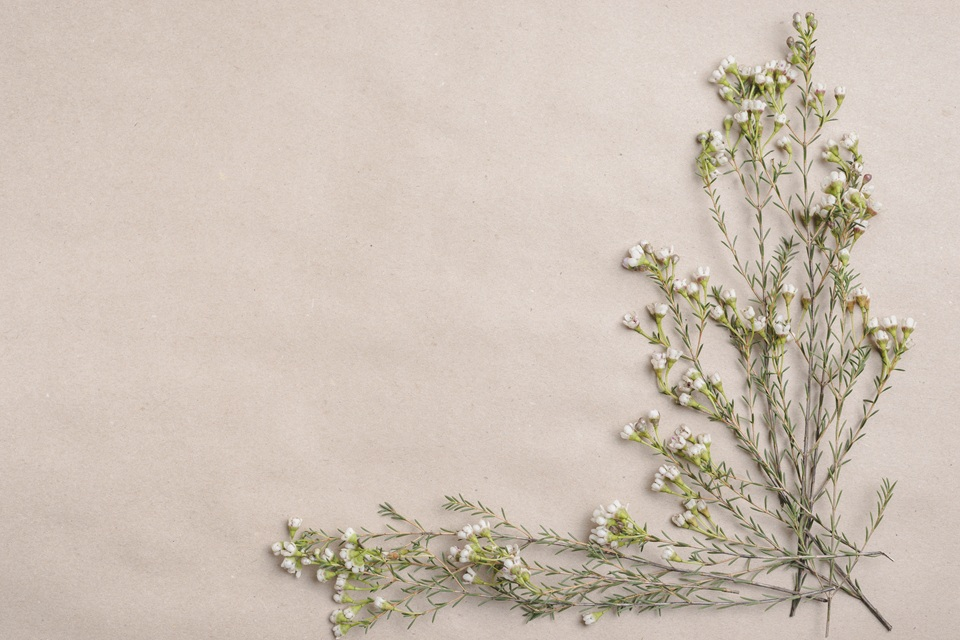

セルフネイル週記

セルフネイル週記へようこそ!
このWebサイトでは、自分がこれまでにしてきたセルフネイルを
記録、紹介をすることを目的としています。
お知らせ
サイトを公開しました。
歴代ネイルを公開しました。
失敗・ハプニングを公開しました。
歴代ネイル
これまでしてきたネイルを写真つきで古い順に掲載し、使用カラー、使用パーツ、コメントを行います。
失敗・ハプニング
歴代ネイルで失敗のあったものを更新したときにのみ、同じタイミングで失敗やトラブルを取り上げ、原因や改善点を含めてまとめます。
個人的に気に入っているデザイン
歴代ネイルの中から特に気に入っているデザインを厳選し、理由をつけて紹介します。